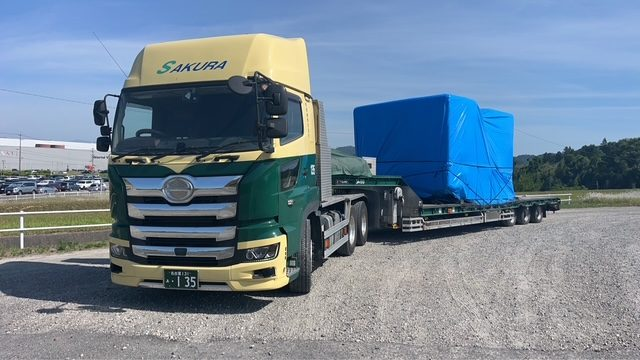
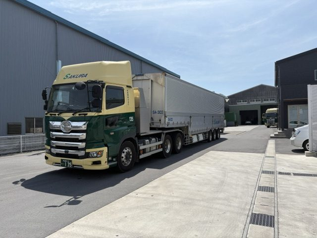
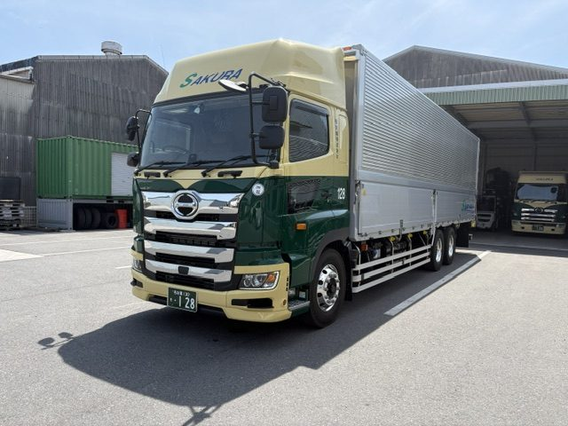

桜運輸株式会社は、徹底した教育によって育てられたプロドライバーが、高い安全基準に対応した輸送サービスを提供しています。
一つひとつの輸送に責任を持ち、安心して任せていただける物流を実現します。
“安全と信頼を運ぶ、海上コンテナ輸送のプロフェッショナル”
世界各国から名古屋港に集約された輸入コンテナを、主に中部・近畿エリアへ配送しています。また、日本製品の輸出に伴う海上コンテナ輸送にも対応し、名古屋港まで安全・確実にお届けします。

豊富な車両ラインナップにより、多様な輸送ニーズにお応えします。
工作機械や大型設備などの特殊貨物輸送にも対応しており、現在は日本を代表する工作機械メーカー様の輸出用機械を中心に、名古屋港までの輸送を行っています。

13mの大型ロングトレーラーを活用し、中部・関西エリアを中心に輸送を行っています。
ウイングトレーラー、平ボディトレーラーを保有しており、一般的なトレーラーよりも長い車両を活かして、多様な貨物サイズに柔軟に対応します。

大型ウイングトラックによる輸送を行っており、現在は大手食品メーカー様の貨物輸送を担当しています。

コンクリートミキサー車による輸送を行っており、東海地区を中心に、主に流動化処理土の運搬に対応しています。
積載効率に優れた車両により、最大積載容量5.5㎥、最大積載重量11,000kgまで対応可能です。

サービスに関するご依頼や、ご相談などございましたら、こちらからお気軽にお問い合わせください。